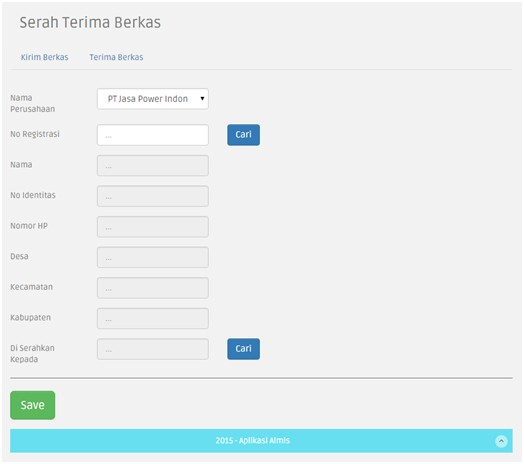
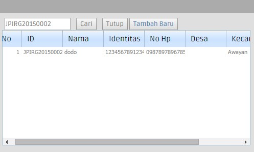
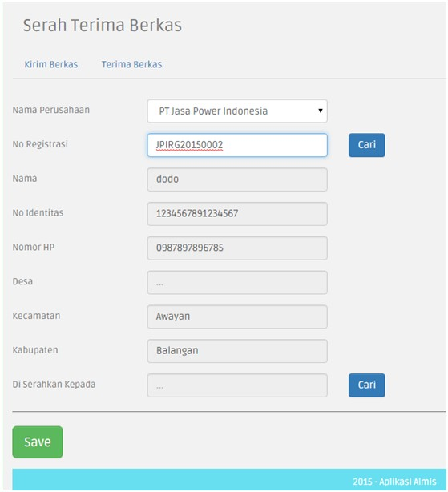
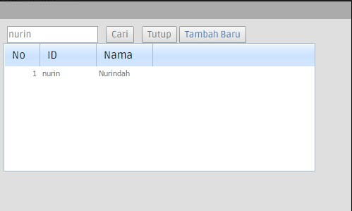
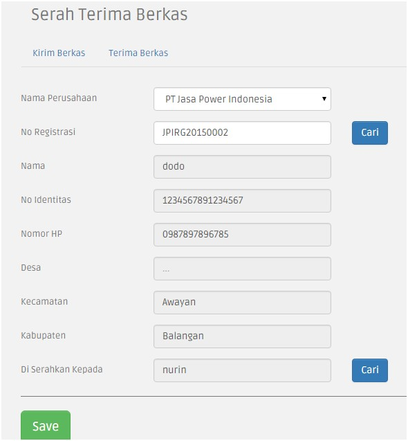
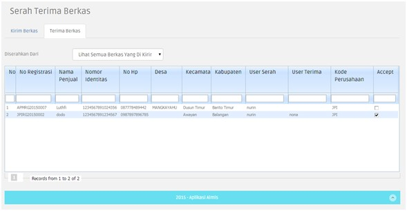

3.1.8. Serah Terima Berkas
Untuk menuju ke halaman Serah Terima Berkas, tahapan yang dilakukan adalah sebagai berikut:
- Klik menu Land Compensation > Serah Terima Berkas
- Akan tampil halaman Serah Terima Berkas.
Didalam menu Serah Terima Berkas terdapat dua form yang harus diisi untuk melakukan serah terima berkas, yaitu Kirim Berkas dan Terima Berkas.
Isilah form Kirim Berkas terlebih dahulu, tahapan yang dapat dilakukan untuk melakukan Kirim Berkas, adalah sebagai berikut:

- Klik button Cari untuk mencari No. Registrasi dengan data yang telah dilakukan transaksi sebelumnya yaitu transaksi yang sudah berada di Halaman Finalisasi.
- Masukkan No. Registrasi.
- Klik button Cari
- Jika No. Registrasi sudah terdaftar maka akan muncul pada tabel, seperti gambar berikut:

- Klik pada record yang ditampilkan tersebut, maka data akan tampil di Form Kirim Berkas.

- Klik button Cari pada field Di serahkan Kepada, ketikkan nama Assigne yang ingin diberikan tugas pada search box lalu klik button Cari

- Klik pada nama record yang ditampilkan maka field Di Serahkan Kepada akan terisi

- Klik Save, dan data akan tersimpan untuk masuk ke tahap Terima Berkas

- Klik centang pada field Accept untuk menerima berkas pada record yang dipilih.